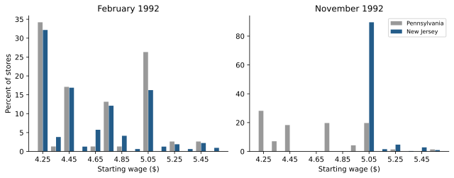
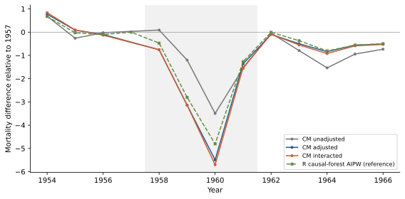
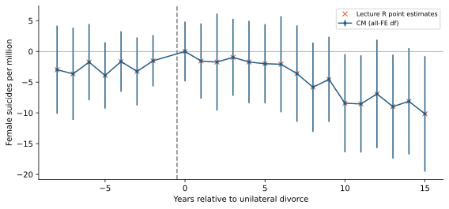
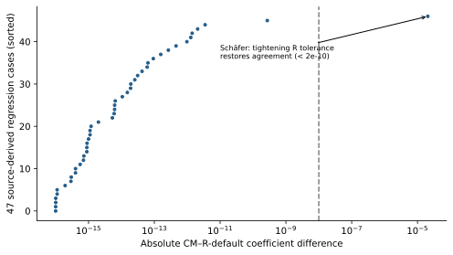
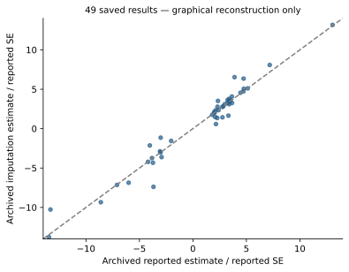

A replication audit and development specification for CrabbyMetrics 0.9.0
Author
Apoorva Lal · CrabbyMetrics audit
Published
September 21, 2026
Implementation follow-up
The original findings below describe the unmodified 0.9.0 audit. The subsequent implementation report documents the corrected SCM solver, FE prediction/covariance controls, native FE imputation, and new R-backed tests. Historical audit numbers are intentionally preserved.
Findings
Yiqing Xu’s six panel-data lectures provide a useful empirical test of the distinction between regression kernels and complete causal-panel workflows. CrabbyMetrics’ regression kernels cover much of the first category. Treatment-aware sample construction, counterfactual prediction, heterogeneous-effect aggregation, and joint diagnostic inference remain substantial gaps.
This is a partial replication and an implementation specification, not a claim to have reproduced all empirical results in the decks. All six decks were inventoried. Published illustrations without matching microdata, methods without current APIs, and resource-limited cases remain explicitly identified.
The initial audit used 0b56835 (v0.9.0) without estimator modifications. Its findings below are historical; PR #23 subsequently repaired the identified SCM defect and added FE imputation, released in v0.9.1.
Result
Evidence
Core OLS/FE estimates agree with R
59 specifications, 102 coefficients; maximum absolute difference 2.28\times10^{-12}
Broad reanalysis regression coverage
47 of 49 archive datasets fitted through CM and R; 45 source point specifications and 2 explicitly simplified, no-unit-trend baselines
Standalone SCM has a numerical defect
Prop99 pre-RMSE 2.399913 versus same-objective optimum 1.656400; reports convergence at budgets 50, 500 and 5,000
FE counterfactuals are composable but not first-class
Five CM explicit-dummy fits match R FEct closely, without a native treatment-aware imputation/inference API
Two 89m/158m-observation data sets not loaded; full multi-method/bootstrap/sensitivity pipelines not reproduced
The most valuable next changes are SCM solver correctness, followed by a panel observation/treatment-mask contract and efficient FE imputation. Adding another in-sample low-rank decomposition would not address the central gap exposed by these lectures.
The lectures are pinned to commit 891412f174fc0283677de84d612622ff602dd1d3. Ten initial public data inputs cover Swiss naturalization, Card–Krueger stores, beer taxes and fatalities, unilateral divorce, the Chinese famine, smoking, turnout, and coethnic donations.
The Chiu–Lan–Liu–Xu reanalysis archive, version 1.0, supplies 49 study datasets and their scripts. Its 582 MB ZIP was checksum-verified. The modern examples use the verified archive inputs.
All raw inputs live in an ignored local cache. The branch records source URLs, hashes, source-derived model specifications, package versions, output tables, and reproducible scripts. R references are independent of the CM fitting implementation. Equal designs are verified separately from equal source specifications. In particular, the divorce event-study check uses the lecture’s original i(rel_b, ref=-1) formula, not merely the Python-generated dummies.
Code
from pathlib import Pathimport os, jsonimport numpy as npimport pandas as pdimport crabbymetrics as cmoverride = os.environ.get("YQX_REPLICATION_ROOT")if override: root = Path(override)else: root =next(p /"replications/yqx_panel"for p in [Path.cwd(), *Path.cwd().parents]if (p /"replications/yqx_panel/results").exists())out = root /"results"verification = json.loads((out /"verification.json").read_text())linear = pd.read_csv(out /"linear-comparison.csv")archive = pd.read_csv(out /"archive-comparison.csv")assert verification["linear_specifications"] ==59assert linear.coef_error.max() <1e-8assert verification["schafer_error_tight_R"] <1e-8print(f"{len(linear)} linear coefficients checked; "f"{archive.status.eq('completed').sum()}/49 archive regressions completed.")print("This verifies recorded comparisons, not all causal estimators in the archive.")
102 linear coefficients checked; 47/49 archive regressions completed.
This verifies recorded comparisons, not all causal estimators in the archive.
What the counts do not mean
The 47 archive runs are regressions, not 47 full reproductions of FEct, Sun–Abraham, Callaway–Sant’Anna, stacked DID, PanelMatch, DID-multiple, HonestDiD, all diagnostic tests, or all confidence intervals.
Two runs omit source-required unit-specific slopes and are labeled baseline comparisons. They are not exact Kogan/Magaloni source replications.
The Hall–Yoder and Sanford metadata report about 89m and 158m observations. They were excluded before decompression on this 16-GiB workstation. Their failure boundary was not measured; an exact aggregation or larger-memory run is needed. Subsampling would change the replication claim.
Simulated illustrations, causal diagrams, title-page crops and context-only maps are not counted as empirical estimates.
Lectures 1–2: fixed effects and basic DID
Swiss naturalization and fatalities
The 245-municipality, 19-year Swiss panel produces these treatment coefficients:
Specification
CM estimate
Comparison
Pooled
2.503318
R agreement
Municipality FE
3.022800
R agreement
Municipality + year FE
1.203658
R agreement
Municipality FE + common linear trend
0.824793
R agreement
Municipality + year FE + municipality slopes
0.986524
Explicit slope-column workaround
Plus municipality quadratic trends
1.222728
Explicit slope-column workaround
The SVP linear interaction and four vote-share bins also match R coefficients, as do supplementary distributed-lag and lead–lag specifications. The latter follow commented source formulas; the old Stata demonstrations are conditional frames rather than all active empirical targets.
Beer-tax coefficients are 0.364605 (pooled), -0.655874 (state FE), and -0.639980 (state/year FE). The lecture’s Swamy–Arora random-effects result, -0.052016, is regenerated in R only; CM has no corresponding random-effects estimator.
The principal regression gap is inference configuration, not coefficient accuracy. CM currently uses an all-absorbed-FE residual-df correction. Default fixest treats cluster-nested effects differently; the lecture’s plm HC1 uses another convention. Aligning the correction makes ordinary-design SEs agree. The explicit varying-slope designs retain small rank-accounting differences (about 4\times10^{-5} and 10^{-4} in SE), which should be exposed rather than called unexplained numerical noise.
Card–Krueger: sample bookkeeping matters
The available-outcome four-cell DID is 2.753606; the complete-store first-difference and store-FE estimates are 2.75. Both are valid reconstructions of their specifications, but they are not the same sample. Unbalanced missing outcomes must not disappear behind a single “replicated” flag.

Starting-wage distributions regenerated from the store microdata using the lecture’s binning recipe.
The longer Card–Krueger (2000) pretrend series is not reproduced: the source explicitly says the underlying BLS ES-202 series is not public. The typed Mariel, Gruber triple-difference and Hong tables are not freshly estimated here; their microdata/specification pipelines were not among the retrieved inputs. The WWI-tax and four shared reanalysis figures also lack matching inputs in this checkout/archive. Re-entering those numbers would not count as replication.
Lecture 3: factorial DID
The updated example has 921 counties: 412 without pre-PRC genealogies and 509 with them. The comparison is the mean mortality change over 1958–1961 relative to 1957. All-population estimates are:
Estimator
Estimate
SE / status
Unadjusted DID
-1.540746
0.806678, CM/R agreement
Covariate-adjusted OLS1
-2.688038
0.771132, CM/R agreement
Fully interacted OLS2
-2.779546
0.812714 with composed variance correction
R IPW
-2.321293
R reference only
R GRF AIPW
-2.370370
R reference, seeded forest
CM ridge/logit AIPW
+0.264135
Different nuisance pipeline; not an exact replication
OLS2 illustrates why a generic robust SE is insufficient. The fdid implementation uses car::hccm(lm), whose actual default is HC3 (despite an HC0 source comment), then adds \gamma'\widehat\Sigma_X\gamma/n. Composing that correction around CM’s HC3 covariance reproduces the R SE to machine precision. Ordinary HC1 gives 0.781958 and is not the same inference procedure.

Famine dynamic contrasts. CM lines are estimated with its OLS API; the green line is the separate R causal-forest reference.
The multivalued illustration was reconstructed in R using the specified 412/254/255 groups. Entropy balancing is also an R reference, but targets group 1 in the current fdid implementation, not the all-county population. Historical fig5/table results use a different high-genealogy definition and are not claimed as reproduced by the updated any-genealogy exercise. Geographic map boundary data were not acquired.
The required package extension is a contrast/target-population wrapper with external nuisance-prediction support, not an assertion that ridge/logit and causal forests should return identical estimates.
Lecture 4: TWFE event studies and decomposition
The divorce TWFE estimate is -3.048894695, matching the lecture’s own -3.05 reproduction rather than the historical paper’s -3.08. The CM event-study coefficients agree with the original R formula within 8\times10^{-12}.

Divorce event study. Both endpoint bins are retained in estimation; only -8 through +15 are displayed. CM intervals use its current all-FE df convention.
A consequential detail: the -9 and +16 endpoint bins belong in the regression. The plot omits them, but dropping the -9 regressor changes all coefficients. The replication harness was corrected after the direct source-formula check exposed that difference. Regression-engine parity alone would not have caught a shared, incorrectly constructed design.
The R Bacon decomposition has weights summing to one and reconstructs the same -3.048894695. It is an independent reference; CM does not yet supply the decomposition or its design diagnostics.
Lecture 5: modern DID and the 49-study archive
Regression coverage and numerical accuracy

Absolute coefficient differences against fresh R fits. The visible outlier comes from the R default stopping tolerance, not a CM error.
Among the 47 fitted archive cases, 46 agree with default R within 2.72\times10^{-10}. The remaining case is Schäfer’s individual/year/age model: default R yields -0.030371304, while CM yields -0.030391894. Tightening R’s FE tolerance from 10^{-6} to 10^{-10} gives -0.030391893, agreeing with CM within 2\times10^{-10}. Three permutations of CM’s FE-column order agree to about 10^{-12}. This is evidence for recording convergence settings, not for changing CM to reproduce the looser reference result.
Additional source effects were incorporated where specified: candidate-year, state-chamber-year, province-year, district-census-group and age fixed effects. The two source unit-trend specifications remain labeled baseline-only.
Main applications
Application
What was re-estimated
What remains
Bischof–Wagner
CM TWFE; explicit-dummy CM FEct 0.082334 versus R 0.082334
Full six-estimator event curves and joint inference
Grumbach–Sahn donations
Source covariates, CM TWFE; composed CM/R FEct 0.127749
PanelMatch and bootstrap diagnostics; 118 retained treated cells versus lecture text’s 74
Native full-sample TWFE 0.031675; R FEct full -0.119774, trimmed +0.044482
Full set of heterogeneous-DID/event/inference comparisons
The Brazil saved summary uses chris_sub, not the full-sample exercise. The trim selects anyswitch_period == 1 and years through 2014, changing support and comparison cohorts. The sign change is exactly why an estimator result should carry an explicit sample/exclusion record.
The archived aggregate table also contains unresolved naming/value discrepancies for Eckhouse and Esberg relative to fresh fits of their correspondingly named data and scripts. These are retained in the comparison CSV rather than “corrected” by silently swapping labels. Consequently, matching R on an exported design is distinguished from reproducing an archived result under its label.
Saved-output reconstruction is not re-estimation

The 49-study comparison redrawn from the archived summary table. These imputation estimates are saved author outputs, not 49 fresh CM fits.
The saved imputation/reported-estimate ratio has mean 1.021957 and median 1.006334. The latter rounds to 1.01, not the lecture text’s 1.00. This may reflect source-version/rounding differences; the exact recorded numbers are preserved. The saved p-value and sensitivity summaries are not presented as newly computed bootstrap results.
Current CM APIs do not supply the full Sun–Abraham, group-time ATT, PanelMatch, DID-multiple, carryover/equivalence or HonestDiD workflows. Some algebra can be composed from current kernels, but that is different from having validated sample rules, aggregation weights and joint covariance interfaces.
Lecture 6: synthetic panels
Confirmed SCM failure
The source-script outcome-only SCM is a constrained least-squares problem. R augsynth and an independent SciPy SLSQP solve agree on its optimum. CM’s standalone solver does not:
Implementation
Pre-RMSE
Mean post-treatment gap
CM standalone SCM
2.399913
-18.998496
R augsynth, no augmentation
1.656400
-19.513629
Independent SciPy simplex QP
1.656400
-19.513630
CM returns the same suboptimal answer at 50, 500 and 5,000 iterations and sets converged=True. This is not a discrepancy attributable to covariates, augmentation or a different target. A constrained solver with boundary-optimum support and objective/KKT-based diagnostics is the first proposed fix.
The table below displays the saved pre-fix v0.9.0 results. It does not rerun the old optimizer using the newly installed library. The implementation report gives the corrected estimates.
Prop99 gaps. The orange curve is the historical v0.9.0 standalone SCM; the augmented curves are separately re-estimated R references.
The three lecture-script augsynth variants yield -19.513629, -15.952567 and -12.710049. Their paths and pointwise bounds are saved. The separate canonical ADH predictor recipe and 39 in-space placebo fits are reconstructed in R; the lecture does not distribute its original ca1–ca8 script, so these are not claimed as exact figure-provenance matches or as a native CM predictor-V API.
SDID and imputation
CM synthetic DID gives -15.605398, versus -15.603828 from R synthdid. That is close, not exact optimizer parity. The independently resampled 100-draw placebo SEs are 10.2815 and 10.6955. Equal integer seeds across R and Rust do not create identical draws. The SDID scalar ATT is a double-weighted contrast and must not be conflated with the mean of an arbitrary displayed counterfactual-gap path.
On the turnout data, CM’s ordinary TWFE treatment coefficient is 0.777574. Explicit-dummy CM FE imputation matches R at 1.425566. R’s fixed-rank-2 IFEct estimate is 5.005401; this is a reference configuration, not a claim to have replicated Xu’s full rank-selection/CV/inference workflow.
Actual-data API probes establish the current boundary:
Complete-case panels that retain treatment reversals: MC/SDID reject nonabsorbing treatment.
InteractiveFixedEffects.fit(Y, W) is not a supported signature; fitting all observed outcomes with fit(Y) would leak treatment effects into the nuisance surface and would not be IFEct.
Benin remote-sensing outcomes and the TROP experiments are not reproduced. The TROP lecture script merely transcribes a published RMSE table; redrawing that heatmap would not rerun its 21 experimental designs.
Development priorities
The full specification defines APIs, statistical contracts, acceptance cases, and an implementation sequence.
Fix standalone SCM numerical correctness and truthful convergence.
Introduce separate observation/treatment masks and FE counterfactual fitting, with IDs, support checks, level prediction and explicit aggregation.
Expose FE tolerance, rank/SSC choices, varying slopes and event-study conventions. Preserve endpoint bins and record sample exclusions.
Add heterogeneous-effect DID and joint diagnostic inference. Cohort targets, control groups, pretrend/placebo/carryover tests, and sensitivity analysis cannot be inferred from a coefficient vector alone.
Build treatment-aware IFE/MC and augmented-SCM workflows, with tuning restricted to untreated training data.
Add factorial-DID orchestration and external nuisance predictions; consider random effects and other curricular gaps separately.
The immediate engineering opportunity is to turn well-performing regression kernels into transparent, treatment-aware workflows, while repairing the specific constrained-optimization failure exposed by Proposition 99.
Complete empirical-family inventory
Code
from IPython.display import Markdown, displaycoverage = pd.read_csv(root /"coverage.csv")lines = ["| Deck | Empirical family | Status / boundary |", "|---|---|---|"]for row in coverage.itertuples(index=False): clean =lambda s: str(s).replace("|", "/") lines.append(f"| {clean(row.deck)} | {clean(row.family)} | {clean(row.status)}. {clean(row.scope)} |")display(Markdown("\n".join(lines)))
Deck
Empirical family
Status / boundary
1
Swiss panel pooled/unit FE/TWFE/common trend
replicated coefficients; SSC differs. Included 245-municipality panel; source R formulas.
not implemented in CM. Archive has saved outputs and code; joint inference/sensitivity pipeline not freshly rerun.
5
Hall-Yoder and Sanford large panels
resource preflight exclusion. Published n about 89m/158m; no claim of estimator failure; require larger-memory run.
6
Prop99 outcome-only SCM
attempted; confirmed numerical failure. CM misses same-objective R/SciPy optimum while reporting convergence.
6
Prop99 ridge-augmented SCM and covariates
R references only; API gap. Three source-script augsynth fits and pointwise bands regenerated.
6
Prop99 canonical predictor-SCM/placebos
R reconstruction. ADH recipe reconstructed; original ca1-ca8 script absent; not exact figure provenance.
6
Prop99 synthetic DID
close point-estimate reproduction. Native -15.605398 versus R -15.603828; independent 100-draw placebo SEs not exact-draw parity.
6
Xu EDR FEct/IFEct
partial. CM TWFE and composed FE imputation; R fixed-rank IFEct; no native treatment-aware IFE API.
6
Benin land titling/remote sensing
not reproduced: inputs not retrieved. Illustration/imagery and outcomes not supplied in lecture repository or downloaded reanalysis data.
6
TROP Table 1 heatmap
not an empirical rerun. Source script transcribes published 21-design RMSEs; underlying experiments not in lectures.
all
Toy simulations, diagrams, maps used only for context, paper covers
excluded from empirical-result count. No claim to have replicated unrelated simulations or reproduced third-party artwork.
Reproducibility and limitations
The release source archive contains original audit code, numerical summaries, specifications and manifests, but no third-party microdata. Follow its README to fetch the verified inputs and install the recorded R reference versions locally. summarize.py verifies coefficient comparisons and rebuilds plots; it does not silently replace missing native estimators with R outputs.
Source scripts are the primary specification where supplied. Where only images or saved estimates exist, exact version/sample/inference parity remains a separate unresolved requirement. The archive’s very large datasets, full resampling pipelines, two source unit-trend regressions, several missing-data examples, and unprovided empirical inputs are explicitly left open. Completing all lecture results requires both those inputs/resources and the API work in the specification—not merely a larger “tests passed” count.